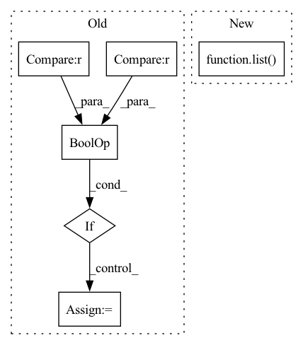

Pattern ID :32274
Before Change
// NULL has already been filtered
prev = IdxPair(pairs[0].src.id, pairs[0].tgt.id)
for pair in pairs[1:]:
if not (
(pair.src.id == prev.src + 1 and pair.tgt.id == prev.tgt + 1)
or (pair.src.id == prev.src and pair.tgt.id == prev.tgt + 1)
or (pair.src.id == prev.src + 1 and pair.tgt.id == prev.tgt)
):
return False
prev = IdxPair(pair.src.id, pair.tgt.id)
return True
def add_null_aligns(self):After Change
@staticmethod
def idxs_are_consecutive(idxs: List[int]):
return sorted(idxs) == list( range(min(idxs), max(idxs)+1))
def add_null_aligns(self):
// Fill in 0 idx for words that are not aligned
// The second list comprehension will already take into account the added idxs of the first oneIn pattern: SUPERPATTERN
Frequency: 4
Non-data size: 6
Instances Fragment ID: 94402176
Project Name: bramvanroy/astred
Commit Name: 7c23779d00d2997039927856df921d4dedb421ae
Time: 2021-02-17
Author: Bram.Vanroy@UGent.be
File Name: astred/aligned.py
M Class Name: AlignedSentences
N Class Name: AlignedSentences
M Method Name: idxs_are_consecutive(1)
N Method Name: idxs_are_consecutive(1)
M Parent Class:
N Parent Class:
M File Name: astred/aligned.py
N File Name: astred/aligned.py
M Start Line: 182
M End Line: 198
N Start Line: 190
N End Line: 191
Before Change
pred = decoded_preds[i]
label = decoded_labels[i]
for key in pred:
if key in label and pred[key] == label[key] :
correct += 1
total += len(label)
total = 1e-10 if total == 0 else total
return dict(After Change
decoded_preds,
training_args.true_types,
training_args.pred_types)
pos_labels = list( training_args.id2role.values())
pos_labels.remove(training_args.id2role[0])
micro_f1 = f1_score(final_labels, final_preds, labels=pos_labels, average="micro") * 100.0
return {"micro_f1": micro_f1}
Fragment ID: 94402192
Project Name: thu-keg/omnievent
Commit Name: 16615dd3b3b08bc6a7d3a7e658469e9c3ef58003
Time: 2022-06-06
Author: penghao20170136@163.com
File Name: src/OpenEE/evaluation/metric.py
M Class Name: AnonimousClass
N Class Name: AnonimousClass
M Method Name: compute_seq_F1(2)
N Method Name: compute_seq_F1(2)
M Parent Class:
N Parent Class:
M File Name: src/OpenEE/evaluation/metric.py
N File Name: src/OpenEE/evaluation/metric.py
M Start Line: 25
M End Line: 55
N Start Line: 26
N End Line: 47
Before Change
scale = (encoding_max - encoding_min) / (2 ** bitwidth.data - 1)
offset = torch.round(-encoding_min / scale)
if len(scale) > 1 and len(tensor.shape) > 1 :
scale = broadcast_to_tensor(tensor, scale, channel_axis)
if len(offset) > 1 and len(tensor.shape) > 1:
offset = broadcast_to_tensor(tensor, offset, channel_axis)After Change
scale_grad = (clamp_out + offset - tensor * mask_tensor / delta) * grad
offset_grad = dequantize_grad * (1 - mask_tensor)
dim = list( range(len(tensor.shape)))
if len(delta) > 1 and len(tensor.shape) > 1:
dim.pop(channel_axis)
intermediate_term1 = scale_grad.sum(dim=dim) / steps Fragment ID: 94402212
Project Name: quic/aimet
Commit Name: f98b3ba87548a733ad92ba19cc888d87a58197ed
Time: 2022-08-08
Author: quic_geunlee@quicinc.com
File Name: TrainingExtensions/torch/src/python/aimet_torch/tensor_quantizer.py
M Class Name: QuantizeDequantizeFunc
N Class Name: QuantizeDequantizeFunc
M Method Name: backward(2)
N Method Name: backward(2)
M Parent Class: torch.autograd.Function
N Parent Class: torch.autograd.Function
M File Name: TrainingExtensions/torch/src/python/aimet_torch/tensor_quantizer.py
N File Name: TrainingExtensions/torch/src/python/aimet_torch/tensor_quantizer.py
M Start Line: 731
M End Line: 750
N Start Line: 741
N End Line: 759
Before Change
else:
self.coorinate_embedding_size = coordinate_dims
if "rgb" in observation_space.spaces and "depth" in observation_space.spaces :
self.visual_encoder = nn.Linear(4096, hidden_size)
else:
self.visual_encoder = nn.Linear(2048, hidden_size)
self.state_encoder = RNNStateEncoder(
(0 if self.is_blind else self.recurrent_hidden_state_size)After Change
import torchvision.models as models
self.visual_encoder = nn.Sequential(
*list( models.resnet50(pretrained=True).children()) [:-1] + [nn.Flatten(), nn.Linear(2048, 512)]
)
self.state_encoder = RNNStateEncoder( Fragment ID: 94402201
Project Name: allenai/allenact
Commit Name: 2ba64c7e5439a65ae01094dbcda18ff0185f6bdc
Time: 2020-02-18
Author: klemenk@allenai.org
File Name: models/point_nav_models.py
M Class Name: PointNavActorCriticResNet50GRU
N Class Name: PointNavActorCriticResNet50GRU
M Method Name: __init__(8)
N Method Name: __init__(8)
M Parent Class: Subscript
N Parent Class: Subscript
M File Name: models/point_nav_models.py
N File Name: models/point_nav_models.py
M Start Line: 195
M End Line: 200
N Start Line: 201
N End Line: 203